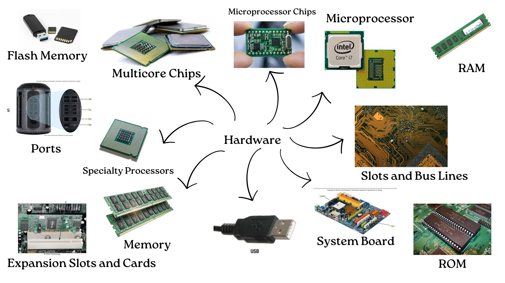

Technology and Information System
Chapter 1 : Emerging Technology in Information Communication Technology (ICT)
ICT refers to the technology used to handle telecommunications, media broadcasting, audiovisual processing, network-based control, and transmission systems. ICT integrates computing technology with telecommunication capabilities, facilitating the storage, retrieval, manipulation, and transmission of information. Information Communication Technology (ICT) continuously evolves with advancements in technology, impacting various sectors including education, business, healthcare, and more.

Chapter 2 : Hardware
Hardware refers to the physical components of a computer or computing system. Each component serves a specific purpose, working together to perform tasks efficiently.
Chapter 3 : Software
Software refers to the set of instructions, data, and programs that tell a computer how to perform specific tasks. It acts as a bridge between the user and hardware, enabling users to interact with and control computer systems.

Chapter 4 : Information System and Systems Analysis and Design
An Information System (IS) is a structured combination of people, processes, data, and technology that collects, processes, stores, and distributes information to support decision-making, coordination, control, analysis, and visualization within an organization or system.
.jpg)
.jpg)
Chapter 5 : Databases and Data Analytics
A database is an organized collection of data that allows for efficient storage, retrieval, modification, and management of data. It serves as a centralized system where data is securely stored and can be easily accessed by users and applications.

Chapter 6 : Networks and Communications
Networks and Communications refer to the interconnected systems that facilitate the exchange of data and information between devices, systems, and users. These networks enable seamless connectivity and efficient communication, which is essential for the functioning of modern businesses, organizations, and personal interactions.

Chapter 7 : Privacy, Security, and Ethics
Privacy, Security, and Ethics are essential concepts in managing and handling digital information, ensuring that individuals and organizations respect and protect the data and rights of users.

Chapter 8 : Cloud Computing
Cloud Computing is the delivery of computing services such as servers, storage, databases, networking, software, and moreover the internet ("the cloud"). Instead of owning physical hardware, users and businesses access these resources through a cloud service provider, enabling scalable and on-demand computing capabilities.

Assignment
Lab 1 : PC Assemble

Assignment 1 : Insudtry talk (Poster)
Assignment 2 : Insudtry visit- UTM DIGITAL (video)

Assignment 3 : Insudtry talk (report)
Design thinking